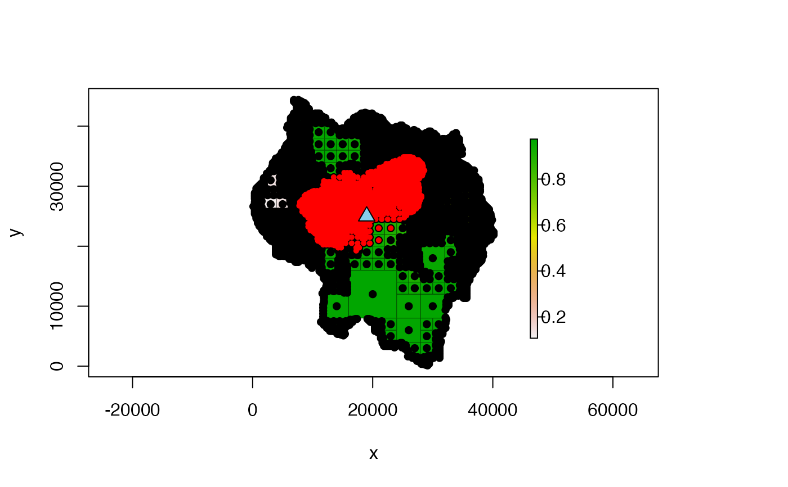

Calculates least-cost paths (LCPs) from the start point (the
point used to create the LcpFinder) to surrounding points. A
constraint can be placed on the LCPs so that only LCPs that are less than
some specified cost-distance are returned.
# S4 method for LcpFinder
find_lcps(x, limit = NULL, return_summary = TRUE)numeric; the maximum cost-distance for the LCPs. If NULL
(the default), no limit is applied and all possible LCPs (within the
LcpFinder's search area) are found
boolean; if TRUE (the default),
summarize_lcps() is used to return a summary matrix of all
paths found. If FALSE, no value is returned.
If return_summary is TRUE,
summarize_lcps() is used to return a matrix summarizing each
LCP found. See the help page of that function for details on the return
matrix. If return_summary is FALSE, no value is returned.
Once the LCPs have been calculated, find_lcp() can be
used to extract paths to individual points. No further calculation will be
required to retrieve these paths so long as they were calculated when
find_lcps() was run.
A very important note to make is that once the LCP tree is calculated, it
never gets smaller. For example, we could use find_lcps()
with limit = NULL to calculate all LCPs. If we then used
find_lcps() on the same LcpFinder but this time used a
limit, it would still return all of the LCPs, even those that are
greater than the specified limit, since the tree never shrinks.
lcp_finder() creates the LcpFinder
object used as input to this function. find_lcp() returns the
LCP between the start point and another point.
summarize_lcps() outputs a summary matrix of all LCPs that
have been calculated so far.
####### NOTE #######
# see the "quadtree-lcp" vignette for more details and examples:
# vignette("quadtree-lcp", package = "quadtree")
####################
library(quadtree)
data(habitat)
qt <- quadtree(habitat, split_threshold = .1, adj_type = "expand")
start_pt <- c(19000, 25000)
# finds LCPs to all cells
lcpf1 <- lcp_finder(qt, start_pt)
paths1 <- find_lcps(lcpf1, limit = NULL)
# limit LCPs by cost-distance
lcpf2 <- lcp_finder(qt, start_pt)
paths2 <- find_lcps(lcpf2, limit = 5000)
# Now plot the reachable cells
plot(qt, crop = TRUE, na_col = NULL, border_lwd = .3)
points(lcpf1, col = "black", pch = 16, cex = 1)
points(lcpf2, col = "red", pch = 16, cex = .7)
points(start_pt[1], start_pt[2], bg = "skyblue", col = "black", pch = 24,
cex = 1.5)
